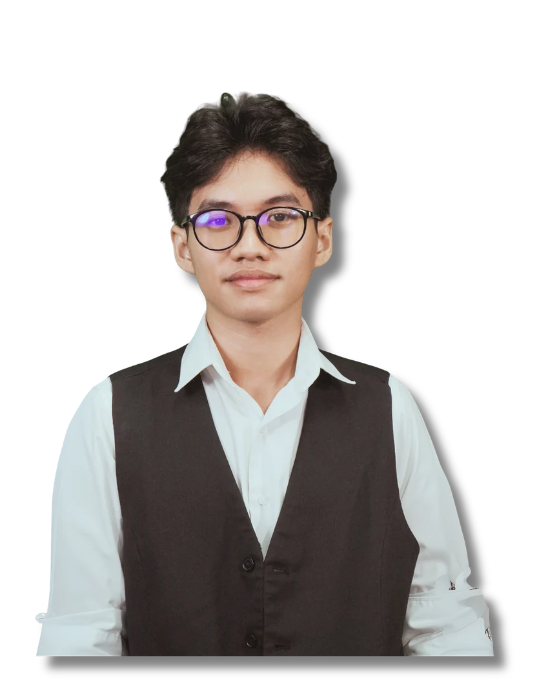

Bagas Petra’sPortfolio
UI/UX, Graphic Designer & Photographer

My journey started in IT and programming, but I found my passion in UI/UX, bridging the gap between technical logic and human-centered design. I love bringing ideas to life, whether by simplifying complex data into an elegant interface like my NutriScan app or through my three-year commitment to creating visual content for a youth commission.
- Name
- Bagas Petra Natalegawa
- Education
- Bachelor of Computer Science, UPN “Veteran” Yogyakarta
- Phone
- +62 8956 0550 7665
Graduation Photography — 2026
Project 1 of 6Graduation portrait sessions for students, couples and families, from single portraits to large family groups, delivered as fully edited, full-resolution photos.
What I didDirected and shot the sessions, then built one colour grade from a reference mood and carried it across 60+ photos: darker, warmer backgrounds, subjects lifted forward, natural skin tones and clean subject edges.
The outcomeA consistent, recognisable look across every set, refined photo by photo (skin tone, white fabric, flash highlights, distractions in the frame) so each image holds up at full size.
- CameraSony A7 Mark II (Full-Frame)
- LensFE 85mm F1.4
- LensFE 50mm F1.4
Tap a photo to view it larger.
NutriScan App — 2023
Project 2 of 6A mobile app that returns nutritional information from a single photo of a meal. The hard part was never the scan; it was making dense nutrition data readable in seconds.
What I didOwned the end-to-end design at Bangkit Academy (Google, GoTo, Traveloka): a three-step flow, wireframes, the high-fidelity UI, and a tested interactive prototype.
The outcomeA calorie ring, macro breakdown and ingredient list, so a result reads at a glance and detail stays one tap away. Published as a case study on Medium.
Read the case study on Medium ↗Attendance App — 2024
Project 3 of 6A location-based attendance app for office staff, designed specifically for adults aged 35–60 who are not comfortable with dense mobile interfaces.
What I didRan the research phase and built the personas, then designed a high-contrast, minimal UI: large type, one clear action per screen, a flat architecture.
The outcomeStaff could check in and out without instruction. The project taught me that accessibility is not a final polish step; it is the brief itself.
SocAI Mobile App — 2026
Project 4 of 6SocAI (socai.id) is an AI-powered social app where users interact with AI characters and viral-effect content on mobile, aimed at creators and casual users who want entertaining conversational AI experiences.
What I didRan the mobile app UI/UX review, audited screens and flows, documented usability and interaction issues with prioritised fixes, and mapped the end-to-end experience into a UI/UX flow; also designed the business decks (Acquisition Deck EN/ID, SocAI Deck 2026, About SocAI 2026) and refined the logo.
Explainability & trustSurfaced what an answer was based on, signalled uncertainty instead of hiding it, and kept the user in control with edit, retry and feedback actions.
Youth Commission Graphic Design — 2022–24
Project 5 of 6Two years of work as a core member of the youth commission’s graphic design team, creating a wide range of visual materials for the community’s events and monthly publications.
My impactTranslating abstract themes and event concepts into engaging visual content such as posters and announcement cards. These designs helped increase awareness and participation in the community’s activities.
What I learnedSharpened my technical design skills and learned to work collaboratively within a creative team: managing multiple deadlines, adapting designs for different themes, and maintaining a consistent visual identity for an organization.
Freelance Graphic & Merchandise Design — 2022–present
Project 6 of 6A collection of my paid freelance work for various clients, focusing on graphics for tangible products like event banners, T-shirt apparel and other merchandise.
My impactHelping clients translate their vision into professional, print-ready designs for their brand or event, managing the process from initial concept discussions to delivering the final files for production.
What I learnedHow to manage client communication, interpret a design brief, and deliver work that meets specific technical requirements for printing: the commercial side of design, and creating visuals that align with a client’s business goals.
Thank you,
I would love to talk about how this way of working could fit your product team.